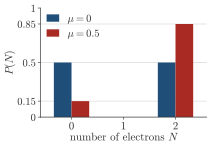
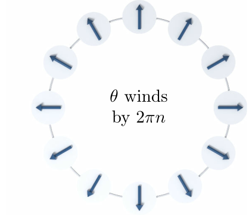

Page 4 of 16 of this session
5.6 Why pairing does not conserve the particle number
A superconductor is said to have a fixed parity of the electron number, while the number itself is not fixed. What does this mean for the ground state of the pairing Hamiltonian, and why does the pairing term get the gauge phase twice? We will now see that the Hamiltonian changes \(N\) only by \(0\) or \(\pm2\), so the parity is conserved, and that a gauge transformation multiplies the pairing term by \(e^{-2i\varphi}\).
\[H_{\text{MF}} = -t\sum_{n\sigma}\left(c_{n\sigma}^\dagger c_{n+1,\sigma}+\text{h.c.}\right) - \mu\sum_{n\sigma}c_{n\sigma}^\dagger c_{n\sigma} + \sum_n\left(\Delta_n\, c_{n\uparrow}^\dagger c_{n\downarrow}^\dagger + \Delta_n^*\, c_{n\downarrow}c_{n\uparrow}\right) - \sum_n\frac{|\Delta_n|^2}{U}. \tag{5.4}\]
\[c \to c\, e^{i\varphi}, \qquad c^\dagger \to c^\dagger e^{-i\varphi}, \tag{1.10}\]
The first equation is the mean-field Hamiltonian of Section 5.5 for a chain, with the hopping \(t\), the chemical potential \(\mu\) and the pair amplitude \(\Delta_n=U\langle c_{n\downarrow}c_{n\uparrow}\rangle\) of each site \(n\), for an attractive \(U<0\). The second one is the gauge transformation of Section 1.15, which changes the phase of every annihilation operator by the same angle \(\varphi\).
Let us now show in an exact way the statement of Section 1.15 that the electron number fluctuates, instead of only stating it. We take the eigenvalue equation \(H_{\text{MF}}|G\rangle = E|G\rangle\) for the Hamiltonian in (5.4), and we expand the ground state in the occupation-number basis, which is the Fock basis, ordered by the total particle number \(N\), as \(|G\rangle = \sum_N a_N |N\rangle\). The hopping and chemical-potential terms in (5.4) conserve \(N\), since each of them has one \(c^\dagger\) and one \(c\). The pairing terms \(\Delta_n c_{n\uparrow}^\dagger c_{n\downarrow}^\dagger\) and \(\Delta_n^* c_{n\downarrow}c_{n\uparrow}\) change \(N\) by \(+2\) and \(-2\) respectively. The key point is that no term in \(H_{\text{MF}}\) ever changes \(N\) by \(\pm 1\). So \(H_{\text{MF}}\) only connects Fock states whose particle numbers differ by an even integer. For \(|G\rangle\) to be an eigenstate, \(a_N\) can then be nonzero only inside one fixed parity class of \(N\), either all even or all odd.
However, this says nothing about which even or odd values of \(N\) appear, and in general \(a_N \ne 0\) for several values of \(N\) in that class, for example \(N=0,2,4,\dots\) at the same time. The mean-field ground state is therefore not an eigenstate of the total number operator \(\hat N\), even though it has a well-defined fermion parity. This is the exact meaning of the statement that a superconductor has a fluctuating electron number but a fixed parity. Session 1 pointed this out in its discussion of the superposition puzzle of the quantum dot, in Section 1.5.
Every term of the mean-field Hamiltonian changes the electron number by \(0\) or \(\pm2\), so for \(\Delta\neq0\)
\[[H_{\text{MF}},(-1)^{\hat N}]=0, \qquad [H_{\text{MF}},\hat N]\neq0 .\]
The ground state has a fixed fermion parity \((-1)^N\), and in general it is a superposition of several electron numbers of this parity.
The steps The ground state of one site with pairing
Let us take the simplest case, one site with the two spins and \(t=0\), which is (5.4) without its constant,
\[H=-\mu\,(n_\uparrow+n_\downarrow)+\Delta\, c_\uparrow^\dagger c_\downarrow^\dagger+\Delta^*\, c_\downarrow c_\uparrow .\]
The four states are \(|0\rangle\), \(|{\uparrow}\rangle\), \(|{\downarrow}\rangle\) and \(|2\rangle=c_\uparrow^\dagger c_\downarrow^\dagger|0\rangle\). The pairing term sends \(|0\rangle\) to \(\Delta|2\rangle\) and \(|2\rangle\) to \(\Delta^*|0\rangle\), and it gives zero on the two states with one electron. So the states with \(N=1\) decouple, with the energy \(-\mu\). In the states \(|0\rangle\) and \(|2\rangle\) the Hamiltonian is the \(2\times2\) matrix
\[H_{\text{even}}=\begin{pmatrix}0&\Delta^*\\ \Delta&-2\mu\end{pmatrix},\]
with the eigenvalues \(E_\pm=-\mu\pm\sqrt{\mu^2+|\Delta|^2}\). The lower one is below the energy \(-\mu\) of the odd states for any \(\Delta\neq0\), since \(\sqrt{\mu^2+|\Delta|^2}>0\), so the ground state is even.
At \(\mu=0\) and a real \(\Delta>0\) the ground state is
\[|G\rangle=\frac{|0\rangle-|2\rangle}{\sqrt2},\]
with the energy \(-\Delta\), which is \(-0.5\) for \(\Delta=0.5\). A measurement of \(N\) gives \(0\) or \(2\), each with the probability \(1/2\), and never \(1\). With many sites the hopping moves electrons from site to site but keeps \(N\), so the ground state stays in one parity class while it mixes several values of \(N\).

The parity of a superconducting island can be read in transport. In an Al-Al\(_2\)O\(_3\)-Al single-electron tunneling transistor in the superconducting state, the current-voltage curve at low bias voltages and low temperatures is \(2e\) periodic in the charge that the gate induces on the island. This periodicity persists up to \(300\) mK, and the authors interpret it as evidence of a free energy that depends on whether the number of electrons on the island is even or odd. The measurement is in this article. Our reading is that an odd number costs an extra energy, as the odd states of one site do in the steps above. So the island prefers an even number of electrons, and the period in the gate charge is \(2e\) instead of \(e\).
We prepare the ground state of \(H_{\text{MF}}\) of (5.4) many times. Each time we measure the total electron number \(N\). What do we find?
\[H_{\text{MF}} = -t\sum_{n\sigma}\left(c_{n\sigma}^\dagger c_{n+1,\sigma}+\text{h.c.}\right) - \mu\sum_{n\sigma}c_{n\sigma}^\dagger c_{n\sigma} + \sum_n\left(\Delta_n\, c_{n\uparrow}^\dagger c_{n\downarrow}^\dagger + \Delta_n^*\, c_{n\downarrow}c_{n\uparrow}\right) - \sum_n\frac{|\Delta_n|^2}{U}. \tag{5.4}\]
Show the answers
- A. ✗ False
This is false. For one site at \(\mu=0\) and \(\Delta=0.5\), the ground state is \((|0\rangle-|2\rangle)/\sqrt2\). We find \(N=0\) in half of the runs and \(N=2\) in the other half, because the pairing term does not commute with \(\hat N\).
- B. ✓ True
This is true. The pairing terms of (5.4) change \(N\) by two, so the parity of \(N\) is fixed and several values of one parity appear. In the one-site example only \(N=0\) and \(N=2\) occur.

The probability of \(N\) electrons in the ground state of one site with \(\Delta=0.5\), at \(\mu=0\) in blue and at \(\mu=0.5\) in red. The weights of \(N=0\) and \(N=2\) are \(0.5\) and \(0.5\) at \(\mu=0\), and \(0.15\) and \(0.85\) at \(\mu=0.5\), and \(N=1\) never appears. - C. ✗ False
This is false. In the one-site example the state \((|0\rangle-|2\rangle)/\sqrt2\) never gives \(N=1\). Every term of \(H_\text{MF}\) changes \(N\) by \(0\) or \(\pm2\), so the parity is conserved.
5.7 The gauge transformation in explicit form
We already wrote the gauge transformation in second quantization in Session 1, in equation (1.10), as \(c \to c\, e^{i\varphi}\), \(c^\dagger \to c^\dagger e^{-i\varphi}\). It is the second-quantized version of the statement that the phase of a first-quantized wave function has no physical meaning. Let us now check explicitly which terms of a realistic Hamiltonian stay invariant under this transformation and which do not. Ordinary hopping \(c_i^\dagger c_j\) is invariant, since the two phases cancel, as \(c_i^\dagger c_j \to e^{-i\varphi}c_i^\dagger \cdot e^{i\varphi} c_j = c_i^\dagger c_j\). The same cancellation protects essentially every other bilinear term that we have seen so far, such as spin-orbit coupling and the magnetic terms that depend on spin. It also protects any density-density interaction term \(c_i^\dagger c_i c_j^\dagger c_j\), which is quartic. All of them are built from the same number of creation and annihilation operators, which pair up index by index.
The pairing term is the only exception.
Under the gauge transformation \(c\to c\,e^{i\varphi}\) the pairing term changes as
\[\Delta\, c_{n\uparrow}^\dagger c_{n\downarrow}^\dagger \;\longrightarrow\; \Delta\, e^{-2i\varphi}\, c_{n\uparrow}^\dagger c_{n\downarrow}^\dagger. \tag{5.5}\]
Both operators are creation operators, so the phase comes twice. The interacting Hamiltonian (5.2) does not change under this transformation, so a fixed phase of \(\Delta\) is a choice that the ground state makes.
It gets the phase twice, because both operators are creation operators and not one creation and one annihilation operator. No choice of \(\varphi \ne 0 \pmod \pi\) leaves this term invariant, so a Hamiltonian with a nonzero \(\Delta\) is not gauge invariant term by term. In an equivalent way, we can write the transformation as acting on the order parameter itself, \(\Delta \to \Delta\, e^{2i\varphi}\). Then any fixed phase of \(\Delta\) is a choice that the ground state makes spontaneously, which is the signature of continuous symmetry breaking. This is the same logic that Session 1 used to show the gauge symmetry breaking of equation (1.9), now applied in full detail. We have now seen why the factor is \(2\varphi\) and not \(\varphi\).

Under the gauge transformation \(c\to c\,e^{i\varphi}\) the pairing term gets the phase \(e^{-2i\varphi}\). For which angle does \(\Delta\, c_{n\uparrow}^\dagger c_{n\downarrow}^\dagger\) stay unchanged?
Show the answers
- A. ✗ False
This is false. For \(\varphi=\pi/2\) the factor is \(e^{-i\pi}=-1\). Then \(\Delta\to-\Delta\), which is a different mean-field state, and we only recover the same term after \(\varphi=\pi\).
- B. ✓ True
This is true. The factor \(e^{-2i\varphi}\) is \(e^{-2\pi i}=1\), so the pairing term does not change. The same holds for \(\varphi=0\).
- C. ✗ False
This is false. For \(\varphi=\pi/4\) the factor is \(e^{-i\pi/2}=-i\). Then \(\Delta\to-i\Delta\), which has the phase shifted by a quarter turn. Here \(\Delta\) is the coefficient of \(c_{n\uparrow}^\dagger c_{n\downarrow}^\dagger\) in the Hamiltonian. If we put \(c\to c\,e^{i\varphi}\) into \(\langle c_{n\downarrow}c_{n\uparrow}\rangle\) and keep the state, the factor is \(e^{i\pi/2}=i\) instead.
A gauge transformation changes the phase of every annihilation operator,
\[c\to c\,e^{i\varphi}, \qquad c^\dagger\to c^\dagger e^{-i\varphi}.\]
Which term of a Hamiltonian changes under it?
Show the answers
- A. ✗ False
This is false. The two phases cancel, \(e^{-i\varphi}c_i^\dagger\, e^{i\varphi}c_j=c_i^\dagger c_j\). For \(\varphi=\pi/4\) the factor is \(e^{-i\pi/4}e^{i\pi/4}=1\), so a hopping keeps its value.
- B. ✗ False
This is false. Each density \(c_i^\dagger c_i\) has one creation and one annihilation operator, so it gets \(e^{-i\varphi}e^{i\varphi}=1\). For \(\varphi=\pi/4\) the product of the four factors is \(1\), so the interaction does not change.
- C. ✓ True
This is true. Both operators are creation operators, so the term gets \(e^{-2i\varphi}\). For \(\varphi=\pi/4\) this is \(-i\), and the term changes.
The term that changes is the one with two creation operators, which is why the pair amplitude \(\Delta\) is the order parameter of the broken gauge symmetry.
One site has \(H=-\mu\,(n_\uparrow+n_\downarrow)+\Delta\,(c_\uparrow^\dagger c_\downarrow^\dagger+c_\downarrow c_\uparrow)\) with \(\Delta=0.5\) and \(\mu=0.5\). Find the energy of the ground state and the probabilities \(P(N=0)\) and \(P(N=2)\) of finding zero and two electrons in it.
Solution
The pairing term gives zero on the states with one electron, so they keep the energy \(-\mu=-0.5\). In the basis \(|0\rangle\) and \(|2\rangle=c_\uparrow^\dagger c_\downarrow^\dagger|0\rangle\) the Hamiltonian is
\[\begin{pmatrix}0&0.5\\ 0.5&-1\end{pmatrix},\]
with the eigenvalues \(-0.5\pm\sqrt{0.5}\), which are \(0.207\) and \(-1.207\). The lower one is below \(-0.5\), so the ground state is even, with the energy \(-1.207\). We write it as \(a|0\rangle+b|2\rangle\). The first row of the matrix gives \(0.5\,b=E\,a\), so \(b=2E\,a=-2.414\,a\), and the normalization \(a^2+b^2=1\) gives
\[P(N=0)=a^2=0.146, \qquad P(N=2)=b^2=0.854.\]
The chemical potential favors the doubly occupied state, while the pairing keeps a weight of \(0.146\) on the empty one. The average number of electrons is \(2P(N=2)=2\times0.8536=1.707\), which is not an integer, while each measurement gives \(0\) or \(2\). In the BCS ground state each pair of momenta \(\mathbf k\) and \(-\mathbf k\) is the same \(2\times2\) problem, so a large superconductor also has a fixed parity and a spread of \(N\).
- In Section 5.8 we write the pairing Hamiltonian in a basis where it can be diagonalized, even though it does not conserve \(N\).
- In Section 8.6 the BCS state (8.6) of spinons also mixes different particle numbers, and a constraint of one fermion per site removes this freedom.
- In Section 8.10 a gauge degree of freedom comes back as an emergent symmetry of a quantum spin liquid, in analogy with the phase of \(\Delta\).